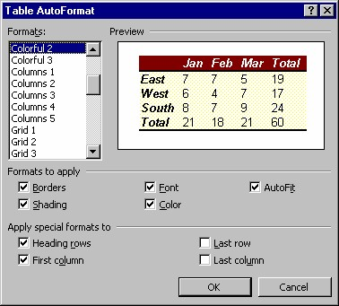
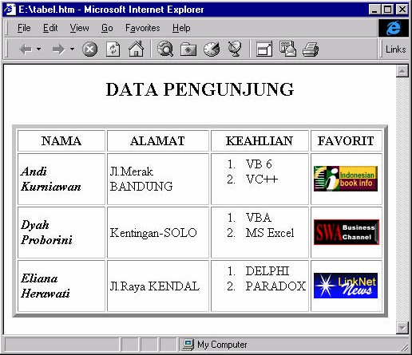

4 Menerapkan AutoFormat
Meskipun FrontPage XP telah menyediakan sarana untuk mem-format tabel, bisa
jadi Anda tidak punya waktu untuk memperindah tampilan tabel tersebut. Padahal,
Anda tidak ingin menggunakan tabel yang polos seperti itu.
FrontPage XP menyediakan solusi untuk menghadapi hal ini. FrontPage XP
menyediakan tabel dengan berbagai variasi yang disebut Autoformat.
Dengan Autoformat Anda bisa mem-format tabel secara cepat. Langkah yang
diperlukan adalah:
1. Tempatkan kursor pada tabel.
2. Dari menu Table, klik Table AutoFormat. Tampil kotak dialog Table
AutoFormat.

Gambar 9.18 Kotak dialog Table AutoFormat
3. Pada daftar Formats to Apply maupun Apply special formats, tentukan item
untuk penerapan AutoFormat. Item tersebut antara lain Border, Font, AutoFit,
Shading, Color, Heading rows, First Column, Last row dan Last Column.
4. Pada daftar Formats, pilihlah salah satu format yang paling Anda sukai, pilihan
Anda akan ditampilkan pada kotak Preview di sampingnya.
5. Klik OK.
6. Setelah AutoFormat Anda terapkan pada tabel, Anda masih bisa mengedit
format sesuai keperluan Anda.
Setelah memasang dan mengatur suatu tabel, Anda bisa mengisi sel dengan teks atau
gambar. Teks bisa menggunakan daftar atau bullet atau perlengkapan teks lainnya.
Gambar 9.19 menunjukkan contoh pemakaian tabel yang berisi berbagai objek.

Gambar 9.19 Tabel dengan isi yang beragam dalam jenis dan format
Copyright © Herlan Lesmana
Created with the Freeware Edition of HelpNDoc: Free HTML Help documentation generator